본 절차서는 일본 동경도 도시정비국의 지역위험도 측정 조사에서 제시한 활동곤란계수를 기반으로 하여, 긴급대응난이도의 평가에 있어서 표준화된 절차 설립을 목적으로 한다.
(2) 적용 범위
공익 목적을 실현하기 위하여 개인 혹은 단체에서 긴급대응난이도를 평가하는 경우 이 절차서를 활용할 수 있으며, 본 절차서 이외의 긴급대응난이도를 평가하는 절차서 및 기준이 있으면 다른 절차서 및 기준을 활용할 수 있다.
(3) 긴급대응난이도
지진으로 인해 발생하는 피해는, 재난 지역에 대한 구조 활동과 지진 발생 지역으로부터의 대피가 얼마나 수월한지, 재난 지역과 주변 지역 간의 구호 물자와 인력의 이동이 얼마나 원활하게 이루어질 수 있는지 등에 따라 크게 달라질 수 있다. 이러한 측면에서, 긴급대응난이도는 대피, 구조 등의 긴급대응 활동에 필요한 도로와 공간이 얼마나 잘 확보되어 있고 구축되어 있는지를 바탕으로 지역의 지진재난에 대한 긴급대응 역량을 평가하는 지표이다.
주의 사항
본 절차서를 활용하기 전 아래와 같은 사항들을 유념할 필요가 있다.
① 본 서에서는 긴급대응난이도를 이용하여 지역 간 상대적인 결과를 나타내는 방법을 제안하며, 이 과정에서 특정 지진을 산정하지는 않았다.
② 본 서에서는 지진에 대해 건물 및 기반 시설들이 붕괴되지 않는다는 가정하에 긴급대응난이도 평가가 진행된다.
③ 본 서에서는 대피 및 대응 활동의 난이도 산출을 목적으로 하며, 그 장소가 「반드시 대피 및 대응 활동이 수월하지 않다·수월하다」라고 단정하는 것은 아니며,「대피 및 대응 활동이 수월한 지역」으로 산출된 곳에 대해서도 대피 및 대응 활동이 수월함을 보증하는 것은 아니다.
④ 본 서에서는 긴급대응난이도는 GIS DB에 근거해 평가하는 방법을 제안하여, 실제 지리, 지형, 그리고 지물 등의 현황과 차이로 인한 차이가 있을 수 있다.
⑤ 본 서에서는 특정 데이터나 프로그램 등을 소개하지만 평가자가 다른 데이터 및 프로그램 등을 사용하고자 한다면 면밀한 적용성 검토 후에 사용할 수 있다.
⑥ 본 서에서는 긴급대응난이도 평가 결과를 외부에 공개하기 전, 평가자 각자의 책임하에 상세한 검토가 필요하다.
용어 정의
활동공간
지진 발생 직후 건물 붕괴 또는 화재 발생 시 구조, 소화, 대피 등의 긴급 대응 활동을 할 수 있는 공간을 말한다.
대상공간
지진 발생 직후 건물 붕괴 또는 화재 발생 시 구조, 소화, 대피 등의 긴급 대응 활동이 필요한 공간을 말한다.
활동공간 부족률
지역 내 대상공간에서 활동공간이 어느정도 차지하는지 그 비율을 말한다.
지역 내 도로망
지역 내 대피에 활용될 수 있는 도로로 구성된 네트워크를 말한다.
지역내이동 난이도
지역 내 여러 지점으로부터의 지역 도로망 접근성을 난이도로 표현한 지수를 말한다.
지역 간 도로망
여러 지역 간 주요 도로로 구성된 네트워크를 말한다.
지역간이동 난이도
매개중심성을 이용하여 광역 도로망 내 지역 간 접근성을 난이도로 나타낸 지수를 말한다.
대응 활동
지진 발생 직후 건물 붕괴 또는 화재 발생 시 긴급히 요구되는 구조, 소화, 대피 등의 활동을 말한다.
긴급대응난이도
지진 발생 직후 긴급 대응 활동의 수월한 정도를 '대응 공간 확보'와 '도로망 접근'의 관점에서 평가한 지수를 말한다.
긴급대응난이도
평가의 필요성 및 방법
지진 발생 후 대피 및 대응 활동의 난이도를 정확하게 평가하는 일은 지진피해로 인한 사회경제적 비용을 최소화하고 인명 피해를 줄이기 위해 필수적이다. 정확한 대피 및 대응난이도를 평가하는 일은 제한된 자원을 가장 효과적으로 활용할 수 있도록 하며, 긴급 상황에서 신속하고 적절한 대응을 가능하게 한다. 일례로, 2017년 포항 지진 당시에는 지진이 예기치 않게 발생한 데다, 피해 지역의 범위와 심각성을 신속하게 파악하지 못하여 일부 지역에서는 대피소 안내가 부족하고 구호 활동이 지연되어 주민들이 큰 혼란을 겪는다. 이러한 초기 대응의 미흡은 자원의 효율적인 배분을 어렵게 만들어 사회경제적 비용을 증가시켰으며, 피해 복구에도 추가적인 시간과 노력이 소요되었다. 따라서 지진 피해의 범위를 구분하여 대피 및 대응 활동에 필요한 인력과 자원을 지역별로 효율적으로 배치하고, 우선순위를 결정할 수 있어야 한다.
지진피해 범위를 구분하는 방법은 크게 두 가지로 나뉜다. 첫 번째는 특정 크기의 그리드를 이용하는 방법이고, 두 번째는 행정구역별로 지진에 대한 위험도를 평가하는 방법이다. 그리드를 이용하는 방법은 지리적 공간을 일정한 크기의 그리드 형태로 나누어 격자마다 지진 위험도를 평가하는 방식으로, 그리드의 크기에 따라 미세한 지역 단위까지 상세한 분석이 가능하다. 이 방법은 부지 민감도 정보를 제공하여 지진 피해가 클 것으로 예상되는 범위 내에 있는 건물들에 대해 내진 보강과 같은 지진 피해 저감 대책을 수립하는 데 활용될 수 있다. 그러므로 투자 우선순위를 구역별로 결정하기 위한 근거자료로 쓰일 수 있으며, 자원의 효율적인 활용을 도모할 수 있다.
한편, 행정구역별로 지진 피해를 예측하는 방법의 대표적인 사례로 일본 동경도 도시정비국에서 진행 중인 지역위험도 측정 조사가 있다. 해당 조사는 동경도 내 시가화구역이 포함된 약 5천 개의 행정구역을 대상으로 1등급부터 5등급까지 위험도를 구분하여 행정구역별로 우선순위를 제시하였다. 이러한 위험도 분류는 지역별로 지진에 대한 대비 수준과 취약성을 한눈에 파악할 수 있게 해주며, 행정기관이 재해 예방 및 대응 정책을 수립하는 데 중요한 자료로 활용될 수 있다. 또한, 해당 조사에서 일본의 작은 단위의 행정구역에 해당하는 정정목(町丁目)별로 위험도를 산출하기 위해 시가지 상황조사, 건축물의 내진성, 인구 밀도, 토지 이용 현황 등 다양한 지리정보를 사용하였으며, 이를 통해 각 지역의 특성을 종합적으로 고려한 위험도 평가를 하게 된다.
따라서 지진재해에 대한 활동 난이도를 지역별로 평가할 때는 그리드나 행정구역과 같은 지리정보에 기반한 기초 자료를 활용하여 진행해야 한다. 지리정보를 활용하면 각 지역의 지진 위험도와 취약성을 체계적으로 분석할 수 있으며, 효과적인 대피 및 대응 전략을 수립할 수 있다. 즉, 인구 밀집 지역이나 내진설계가 미흡한 건물이 많은 지역은 먼저 대피 계획을 수립하고, 구조 인력을 배치하는 등의 조치를 취할 수 있으며, 지역별 위험도 평가 결과는 자원의 효율적인 배분과 피해 최소화에 중요한 역할을 한다. 이는 결국 사회 전체의 안전성을 높이고, 재해로 인한 경제적 손실을 줄이는 데 기여하게 된다. 즉, 지리정보가 지역에 대한 안전도를 평가할 때 주요한 기초자료로 사용되며, 이를 통한 체계적인 분석과 대응은 지진재해 관리에 있어서 핵심적인 요소라고 할 수 있다.
일본에서 제시한 활동곤란도는 재해 시 활동 용이성(어려움)을 활동에 유효한 공간의 정도와 도로 네트워크 밀도와 같은 도로 등의 정비 상황에서 평가한 지표를 일컬으며, 지리정보를 사용하여 정정목 별로 그 위험도를 정량적으로 평가한다. 본 연구에서는 활동곤란도를 국내 실정에 맞게 수정하여 긴급대응난이도()를 개발하였다. 활동곤란도는 α와 β라는 지수로 평가되며, 재난에 대한 긴급 대응 단계에서 부상자 등 생존자에게 얼마나 단시간에 접근해 구출하고 의료활동 등의 구조활동을 전개할 수 있는지를 의미하는 도시 내 구조 난이도와 유사하다. 하지만 지진재해 시 대응 활동은 도시 간에도 이루어지므로 도시 간 지원 난이도를 나타내는 γ라는 지표를 포함하여 긴급대응난이도가 개발되었다. 즉, 긴급대응난이도는 도시 내 구조 난이도에 해당하는 α와 β, 도시 간 지원 난이도에 해당하는 γ로 구성되며, 각 지수의 산출식은 다음과 같다. 또한 긴급대응난이도는 식 (2.1-1)과 같이 α, β, 그리고 γ의 기하평균으로 정의한다.
(2.1-1)
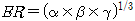
활동곤란계수
일본 동경도 도시정비국의 「지진에 관한 지역위험도 측정 조사」는 동경도 지진 재해 대책 조례 제12조에 기초하며, 약 5년마다 지진에 관한 지역위험도를 과학적으로 측정 및 조사하는 것이다. 조사의 목적은 ‘① 지진재해에 대한 시민의 인식을 깊게하고 방재의식을 일깨우는 것’과 ‘② 지진재해대책사업을 실시할 지역을 선택할 때 활용하기 위함’이다. 한편, 지역위험도는 행정구역마다 지진에 대한 위험성을 비교하기 위해‘ 특정 지진을 상정하는 것이 아니라 모든 행정구역의 지반에서 같은 강도의 지진이 생겼을 경우의 위험성을 평가하고 있다.
또한 해당 조사는 1975년 제1회 조사에서 시작하여 가장 최근인 2022년까지 총 9회에 걸쳐 실시되었으며, 회차를 거듭할수록 보다 세밀한 지역위험도 평가가 이루어졌다. 일본의 지역위험도 측정 조사는 도시 지역에 해당하는 동경도 구부와 비교적 도시가 덜 개발된 다마지역을 대상으로 하였으며, 동경도 내에 있는 시가화구역이 있는 정정목들을 기준으로 평가하였다. 이때 시가화구역은 이미 시가지를 형성하고 있는 구역이다. 참고로 정정목(町丁目)은 한국의 동에 상당하거나 그보다 더 상세히 구분된 행정구역을 의미한다. 특히, 제7회 조사부터 지진 발생 시 대피 또는 대응 활동이 얼마나 어려운지를 나타내는 정량적 지표인 활동곤란계수(활동곤란도)가 등장하였으며, 회차가 거듭될수록 주요 내용은 [표 2.2-1]과 같이 내용이 업데이트 되었다.
[표 2.2-1] 활동곤란계수의 주요 기초 데이터 및 측정 방법의 변천 과정
조사 회차
7회
8회
9회
주요 기초 데이터
시가지 상황 조사(도쿄 소방청, 2010년)
시가지 상황 조사(도쿄 소방청, 2015년)
토지 이용현황 조사(동경도 23구：2011년도, 다마：2012년）
제8회와 동일(2019년)
제8회와 동일(동경도 23구：2016년도, 다마：2017년）
측정 방법
활동 유효공간 부족률×도로 네트워크 밀도 부족률
제7회 조사와 동일(제외 면적 고려, 그 밖의 개선사항 등)
제7회 조사와 동일(활동곤란도에서 활동곤란계수로 명칭 변경, 기타 개선사항 등)
지진으로 인해 건물이 붕괴되거나 화재가 발생했을 때, 위험지역으로부터의 대피나 화재진압 및 구조 등 재난 시 활동의 어려움이 이후 피해 규모에 영향을 미친다. 활동곤란계수는 이러한 활동의 난이도를 도로망의 조밀함, 폭, 그리고 도로의 수 등 도로 정비상태에 따라 산출된다. 일본 동경도 도시 정비국은 활동 곤란 계수를 [그림 2.2-1]과 같은「도쿄도 시가지 상황조사(제10회)」 도로망 데이터를 활용하고, 지역 공동체 단위의 활동 유효 공간 부족률 및 도로 네트워크 밀도 부족률을 식 (2.2-1)을 이용해 산출하였다.
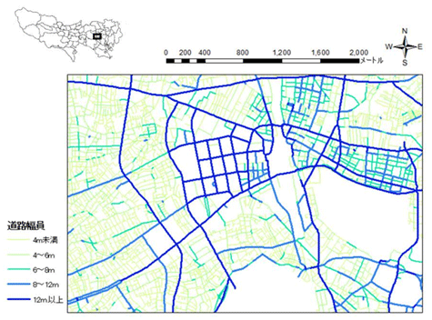
[그림 2.2-1] 도쿄 소방청 데이터의 도로망 분포
(2.2-1)
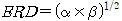
여기서, 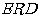는 활동곤란계수, 는 활동 유효 공간 부족률, 그리고 는 도로 네트워크 밀도 부족률이다. 즉, 활동곤란계수는 활동 유효 공간 부족률과 도로 네트워크 밀도 부족률의 기하평균으로 계산되며, 이는 0부터 1까지 범위로 산출되는 활동 유효 공간 부족률과 0과 임의의 양의 값을 범위로 갖는 도로 네트워크 밀도 부족률의 특성으로부터 기인한다. 즉, , , 그리고 값이 크게 산출된다면 해당 지역은 위험하다고 평가되고, 반대의 경우에는 비교적 덜 위험하다고 평가된다.
(1) 활동 유효 공간 부족률
활동 유효 공간 부족률은 정정목별로 폭 4m 이상의 도로 등에 해당하는 긴급 대응 활동을 용이하게 할 수 있는 면적 대비 그렇지 않은 공간의 비율로 평가한 것이다. 즉, 지역 내에서 재난 시 대피나 소화, 구조, 그리고 구호 등의 활동이 어려운 지역의 면적 비율을 나타내는 지표이다. 이에 따라 활동 유효 공간 부족률은 식 (2.2-2)와 같이 정의할 수 있다.
(2.2-2)
여기서, 는 활동 유효 공간 부족률, 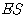는 활동 유효 공간 면적, 그리고 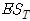는 지역 내 대상 면적에 해당한다. 다시 말하면 는 지진 발생 후 대응 활동이 용이한 공간이며, 는 지진 발생 후 활동이 어려운 공간에 해당한다. 따라서, 활동 유효 공간부족률 산출식을 통하여 대응 활동이 어려운 공간 대비 대응 활동이 용이한 공간의 부족률을 정량적으로 평가할 수 있다.
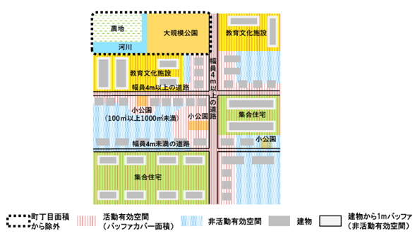
[그림 2.2-2] 활동 유효 공간 부족률(α) 모식도
[그림 2.2-2]는 활동 유효 공간 부족률의 모식도를 나타낸다. 해당 그림에서 빨간색으로 빗금에 해당하는 부분이 활동 유효 공간 에 해당하며, 활동 유효 공간을 포함한 파란색, 회색, 그리고 회색 주변의 옅은 회색 부분은 에 해당한다. 또한 검정색 점선 부분은 측정 제외 대상 구역에 해당하며, 이곳은 인구 밀도가 매우 낮거나 사람이 존재할 확률이 낮아서, 활동 유효 공간 부족률뿐만 아니라 도로 네트워크 밀도 부족률 계산 시에도 배제된다. 즉, 활동곤란계수 산출 시 검은색 점선 영역은 없는 영역으로 간주한다.
활동 유효 공간에서 가장 큰 비중을 차지하는 것은 도로 버퍼 커버 면적이라 할 수 있다. 도로 버퍼 커버 면적은 버퍼의 반경을 도로 폭에 따른 산출식으로 산출하며, 해당 산출식은 [표 2.2-2]에서 확인할 수 있으며, [그림 2.2-4]에서 도로 폭과 버퍼 거리의 관계를 확인할 수 있다.
[표 2.2-2] 도로 버퍼 커버 면적 산출식
도로 폭, D (m)
도로 버퍼 반경 (m)
4 미만
제외
4 ~ 6
(D/2) + (10+(D－4)×5.0)
6 ~ 12
(D/2) + (20+(D－6)×1.67)
12 이상
(D/2) + 30
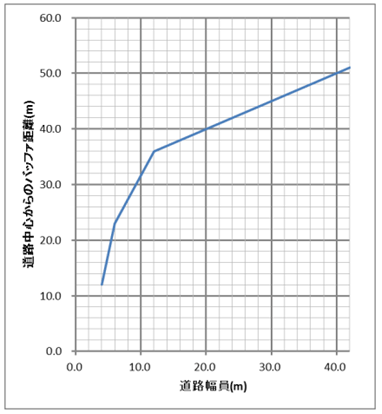
[그림 2.2-3] 도로 폭과 버퍼 거리 간 관계
이때, 도로 버퍼 커버 면적은 소공원(면적 100 ㎡ 이상 100 ㎡ 이하)을 도로로 간주하여 소공원 주변에도 도로 폭에 따라 [그림 2.2-4]와 같이 버퍼 커버 면적이 생성된다. 다만, 도로 버퍼 커버 면적에서 건물과 중복되는 영역은 대응 활동이 어렵다고 보기 때문에 제외한다. 또한, 대규모 교육 문화 시설 부지 면적과 공동주택 토지 면적이 정정목 면적의 50% 이상 차지하고, 부지 및 토지 면적이 5 ha 이상이면 해당 면적도 활동 유효 공간으로 간주한다. 단, 부지 및 토지 내 건물 면적과 건물 주변 1 m 면적은 활동 유효 공간에서 제외한다.
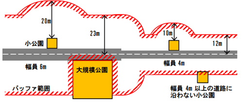
[그림 2.2-4] 버퍼 범위 설정
[그림 2.2-2]에서 검정색 점선 부분에 해당하는 측정 제외 대상 구역은 2가지로 구분된다. 먼저, 거시적 수준에서 하천과 그 부지를 포함하여 최대 폭이 100 m 이상인 곳과 면적이 10 ㏊ 이상이고 짧은 변의 길이가 100 m 이상인 공원이 해당하며, 미시적 수준에서는 토지 이용 구분에 따라 [표 2.2-3]와 같이 10가지 항목이 해당한다.
[표 2.2-3] 토지 이용 분류에 따른 제외 대상 구역
대상 범위
코드
토지 이용 분류
대상 제외 구역의 토지 이용 구분
300
공원, 운동장 등(1000 ㎡이상)
520
철도 항만
511
논
612
밭
613
수목지
620
채소 방목지
700
하천 수로 등
800
황무지
900
임야
220
그 외(군시설, 채석장 등)
측정 제외 대상 구역에서 공원, 운동장 등은 정정목의 경계 등에 의해 도형이 절단되어 처리되기 때문에 인접한 공원, 운동장 등의 도형을 통합하여 면적을 계측하고, 1,000㎡ 이상일 경우 제외한다.
따라서, 활동 유효 공간 부족률은 정정목에서 측정 제외 대상 구역을 배제하고, 나머지 영역에서 활동 유효 공간 면적과 공동체 내 대상 면적을 기준으로 계산된다.
(2) 도로 네트워크 밀도 부족률
도로 네트워크 밀도 부족률은 정정목별로 폭 12m 이상의 도로로 연결되는 폭 6m 이상의 도로에 접근할 수 있는 도로 네트워크의 밀도를 평가한 것으로, 재해 시 주민이 피난을 위해 폭이 넓은 도로로 향하거나 소방, 구조, 그리고 구호 등의 활동을 위해 폭이 넓은 도로에서 피해지역으로 향할 때 어려움을 나타내는 지표이다. 이때, 도로 네트워크 밀도 부족률은 재해지에서 구호지점까지의 도달 시간을 이용해 평가하며, 식 (2.2-3)과 같이 정의된다.
(2.2-3)
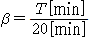
여기서 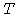는 시작 지점에서 도착 지점까지 도달할 때 소요된 시간의 평균을 의미하며, 시작 지점에서 도착 지점까지 평균 거리에 평균 보행속도를 4ㄹ km/h로 가정하여 곱한 값이다. 즉, 조사 대상 지역 내에 생성된 모든 시작 지점으로부터 도착 지점까지의 도달 소요 시간을 일종의 시간 기준인 20분으로 나누어 산출한다.
시작 지점은 지진 발생 시 대피가 시작될 수 있는 지역 내 모든 지점, 즉 재해지를 의미하며, 지역 내에 90m 간격의 정사각형 그리드로 설정된다. 단, 시작 지점은 재해지를 의미하기 때문에 사람이 없을 법한 곳에 생성하면 비합리적인 결과를 도출할 수 있어서, 측정 제외 대상 구역에 생성된 시작 지점은 [그림 2.2-5]와 같이 제거한다.
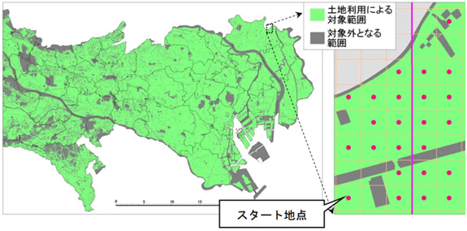
[그림 2.2-5] 시작 지점 설정
도착 지점은 재해지로의 구조 또는 재해지에서 중간 단계의 대피를 하기 위해 외곽도로의 교차점에 설정된다. 여기서 말하는 외곽도로란 1 km 이상 연속된 폭 12 m 이상의 도로를 말하며, 외곽도로에 연속적으로 연결된 폭 6 m 이상의 도로를 도착 지점으로 설정되었다. 그 외, 도내 피난 장소와 대규모 구출 구조 활동 거점 후보지에 들어갈 수 있는 폭 6m 이상의 도로에도 목표지점을 추가하였다. [표 2.2-4]에서 확인할 수 있듯이, 도내 피난 장소 및 대규모 구출 구조 활동 거점은 국내에 상응하는 장소가 없으며 재해 시 대응 활동을 위한 일본 고유의 피난 장소이다.
[표 2.2-4] 도시 내 피난 장소 및 대규모 구출 및 구조 활동 거점 후보지
도시 내 피난 장소
대규모 구출 및 구조 활동 거점 후보지
동경도 지진 재해 대책 조례에 근거해 동경도가 지정하는 피난 장소 및 각 시읍이 지정하는(광역) 피난 장소 중 5ha 이상의 것
동경도 지역 방재 계획에 있어서, 대규모 재해 발생 후 곧바로 지원·구조 인력 등이 피해자의 구출 및 구조 등을 광역적으로 실시하기 위한 열린 공간을 대규모 구출 및 구조 활동 거점 후보지로 지정
시작 지점의 예시는 [그림 2.2-6]과 같으며, 여기서 파란색 점은 시작 지점을, 검정색 경계부는 정정목을, 그리고 회색 부분은 측정 제외 구역을 나타낸다.
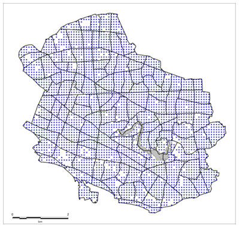
[그림 2.2-6] 90 m 간격으로 설정된 시작 지점
도착 지점의 경우 [그림 2.2-7]에서 빨간색 선으로 표현되어있으나 실제로는 빨간색 선은 도착 지점이 생성되는 도로를 나타낸다. 따라서, 도착 지점은 빨간색 선으로 표현된 도로의 교차점에 생성된다. 해당 그림에서는 따로 표시되어있지 않지만, 가장자리에 생성된 시작 지점에서 가장 가까운 도착 지점이 대상 정정목 주변의 정정목에 존재할 수 있으므로 인근 도로를 포함하여 도착 지점이 설정된다.
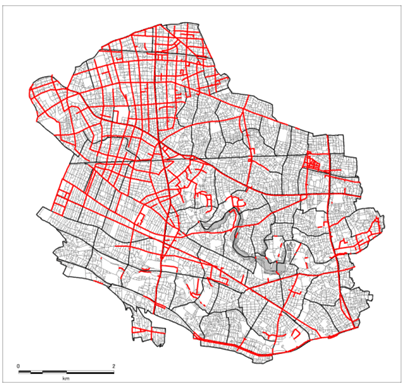
[그림 2.2-7] 도착 지점 분포도
따라서 한 지역의 도로 네트워크 밀도 부족률은 시작 지점에서 가장 가까운 도착 지점까지 평균 거리에 가정된 평균 보행속도 4 km/h를 곱하여 20으로 나누면 산출할 수 있다. 정리하자면 활동곤란계수 산출 방법은 [그림 2.2-8]과 같이 요약할 수 있다.
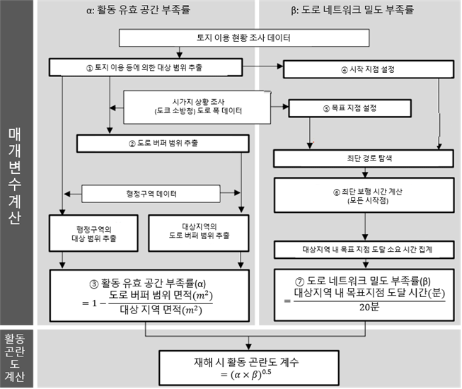
[그림 2.2-8] 활동곤란계수 산출 방법
등급 산출
「지진에 관한 지역위험도 측정 조사」에서는 행정구역별로 위험도를 구별하기 위해 상대적인 등급을 도입하였다. 이 등급은 활동곤란계수 등 행정구역별로 위험도를 정량적으로 나타내는 결과들을 오름차순으로 정렬한 뒤 1부터 5까지 등급을 부여한다. 즉, 등급이 높을수록 더 위험한 지역임을 나타내며, 각 등급에 할당되는 지역의 비율은 위험도가 높은 지역이 더 적고, 안전한 지역이 더 많다는 것을 상정한다. 이러한 배경을 바탕으로 동경도에서는 [그림 2.3-1]과 같이 표준정규분포의 오른쪽 절반에 해당하는 부분을 5등분하여 각 등급별로 지역을 할당하였다.
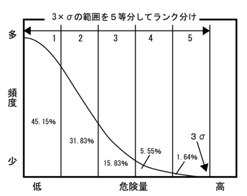
[그림 2.3-1] 동경도의 등급 할당 비율
동경도의 경우 5,192개의 시가화구역에 해당하는 정정목을 대상으로 정량적인 위험도 값에 따라 45.15%에 해당하는 1등급부터 1.64%에 해당하는 5등급까지 구분하였다. 일본의 경우 행정구역 개수가 많으므로 이러한 분포를 사용해도 괜찮지만, 우리나라는 전국에 있는 읍면동 개수를 다 합해도 3,501개 정도밖에 되지 않으므로 이러한 등급 구분 방법을 그대로 사용하는 것은 문제가 될 수 있다. 특히 5등급에 해당하는 1.64%의 비율은 현저하게 낮아서 국내 지역을 대상으로 긴급대응난이도를 산출하게 된다면 5등급인 지역이 매우 적게 나올 수 있다. 따라서 [그림 2.3-2]와 같이 2.5 시그마 범위를 기준으로 5등분하여 등급을 산출하도록 수정하였다.
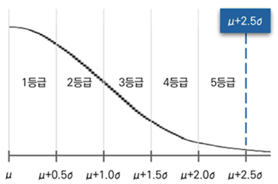
[그림 2.3-2] 수정된 등급 할당 비율
이와 같이 2.5시그마를 기준으로 등급 별 비율을 배분한다면, 1등급부터 5등급까지 대략 38.77%, 30.35%, 18.60%, 8.92%, 3.36%의 비율로 할당된다. 이렇게 되면 5등급에도 적정 수의 지역이 할당되므로 보다 합리적으로 지역별로 등급을 구분할 수 있게 된다.
활동공간 부족률
개요
활동공간 부족률()은 활동곤란계수의 활동 유효 공간 부족률을 차용하여 정의된 지수로, 읍·면·동 단위의 행정구역 내에 폭 4 m 이상의 도로를 이용하여 지진 발생 후 대피나 소화·구조·지원 등의 활동을 할 수 있는 면적이 어느 정도 되는지를 도로 폭에 따라 평가한 것이다. 즉, 긴급대응 활동을 전개할 수 있는 면적과 대상 지역의 면적에 대한 비율을 통해 산출되는 지표이며, 동경도의 평가 방식과 동일하게 식 (3.1-1)로 정의한다.
(3.1-1)
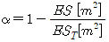
여기서 는 활동공간 부족률, 는 활동공간, 그리고 는 대상공간이다. 활동 공간은 폭 4m 이상 도로에 따라 설정되는 버퍼 내의 범위로 정해지며, 버퍼 범위에서 대피 및 대응 활동이 어려운 건물 면적을 제외한 뒤의 잔여 면적으로 [그림 3.1-1]에서 빗금 부분에 해당한다. 또한, 대상 공간은 토지 용도를 나타내는 지목 중 14개를 제외한 면적이며 점선으로 되어있는 제외 면적의 나머지 부분을 의미한다.
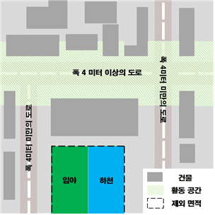
[그림 3.1-1] 활동공간 부족률 예시
대상 공간
대상 공간은 지진 발생 직후 구조, 소화, 대피 등의 긴급 대응 활동이 필요한 공간을 말한다. 토지 이용 현황에 따라 대상 공간의 범위를 산정할 수 있으며, 지목 그리고 공간시설과 하천 두 가지 범주로 구분된다. 이때 제외 대상 공간은 상주인구가 매우 적은 영역이고, 긴급 대응이나 대피 활동의 중요성이 떨어지는 곳에 해당한다. 앞서 언급한 활동곤란계수 산출 과정에서는 토지 이용 분류에 따라 제외 대상 공간을 선정하였으며, 이를 국내 실정에 맞게 지적도와 매핑한 것이 [표 3.2-1]에 해당한다.
[표 3.2-1] 일본과 한국 토지 이용 분류 체계 차이에 의한 매핑
일본의 토지 이용 분류
한국의 지목
公園、運動場等
공원
유원지
운동장
鉄道・港湾等
철도용지
잡종지
田
답
畑
전
樹園地
과수원
採草放牧地
목장용지
水面・河川・水路
제방
하천
구거
유지
수도용지
광천지
原野
잡종지
森林
임야
묘지
その他（自衛隊・米軍の基地、採石場等）
잡종지
즉, 제외 대상 공간은 상주인구가 매우 적기 때문에 대상공간에 포함시키는 것은 비합리적인 측면이 있어 대상공간에서 제외하는 것이다. 또한, 대상공간을 산정하는 데 정확하지 않은 결과를 산출시킬 우려가 있어 지적도 오류로 판단되는 지목‘가’에 대해서도 제외하며, 이에 대한 자세한 내용은 아래에서 확인할 수 있다.
❍ 제외 대상 공간
① 28개의 지목 중 [표 3.2-2]에 명시된 것
② 대규모의 공지 등의 제외 대상 영역
②-1. 면적이 10 ha 이상인 공간시설
②-3. 부지를 포함한 하천
[표 3.2-2] 제외 대상이 되는 지목
번호
지목
지목부호
내용
1
전
전
물을 상시적으로 이용하지 아니하고 곡물. 원예 작물.약초.뽕나무.닥나무.묘목.관상수 등의 식물을 주로 재배하는 토지와 식용을 위하여 죽순을 재배하는 토지는‘전’으로 한다.
2
답
답
물을 상시적으로 직접 이용하여 벼.연.미나리.왕골등의 식물을 주로 재배하는 토지는‘답’으로 한다.
3
과수원
과
사과.배.밤.호도.귤나무 등 과수류를 집단적으로 재배하는 토지와 이에 접속된 저장고 등 부속시설물의 부지는‘과수원’으로 한다.
4
목장용지
목
-축산업 및 낙농업을 하기 위하여 초지를 조성한 토지 -축산법 규정에 의한 가축을 사육하는 축사 등의 부지
5
임야
임
산림 및 원야를 이루고 있는 수림지.죽림지.암석지.자갈땅.모래땅.습지.황무지 등의 토지는‘임야’로 한다.
6
광천지
광
지하에서 온수·약수·석유류 등이 용출되는 용출구(湧出口)와 그 유지(維持)에 사용되는 부지. 다만, 온수·약수·석유류 등을 일정한 장소로 운송하는 송수관·송유관 및 저장시설의 부지는 제외한 것을 ‘광천지’로 한다.
7
철도용지
철
교통운수를 위하여 일정한 궤도 등의 설비와 형태를 갖추어 이용되는 토지와 이에 접속된 역사.차고.발전시설 및 공작창 등 부속시설물의 부지는‘철도용지’로 한다.
8
제방
제
조수.자연유수.모래.바람 등을 막기 위하여 설치된 방조제.방수제.방사제.방파제 등의 부지는‘제방’으로 한다.
9
하천
천
자연의 유수가 있거나 있을 것으로 예상되는 토지는‘하천’으로 한다.
10
구거
구
용수 또는 배수를 위하여 일정한 형태를 갖춘 인공적인 수로.둑 및 그 부속시설물의 부지와 자연의 유수가 있거나 있을 것으로 예상되는 소규모 수로부지는‘구거’로 한다.
11
유지
유
물이 고이거나 상시적으로 물을 저장하고 있는 댐.저수지.소류지.호수.연못 등의 토지와 연.왕골 등이 자생하는 배수가 잘되지 아니하는 토지는‘유지’로 한다.
12
수도용지
수
물을 정수하여 공급하기 위한 취수·저수·도수(導水)·정수·송수 및 배수 시설의 부지 및 이에 접속된 부속시설물의 부지는 ‘수도용지로 한다.
13
공원
공
일반공중의 보건.휴양 및 정서생활에 이용하기 위한 시설을 갖춘 토지로서 국토의계획및이용에관한법률에 의하여 공원 또는 족지로 결정.고시된 토지는‘공원’으로 한다.
14
유원지
원
일반공중의 위락.휴양 등에 적합한 시설물을 종합적으로 갖춘 수영장.유선장.낚시터.어린이놀이터.동물원.식물원.민속촌.경마장 등의 토지와 이에 접속된 부속시설물의 부지는‘유원지’로 한다.
15
묘지
묘
사람의 시체나 유골이 매장된 토지,[도시공원 및 녹지 등에 관한 법률]에 의한 묘지공원으로 결정.고시된 토지 및 장사 등에 관한 법률의 규정에 의한 납골시설과 접속된 부속시설물의 부지는‘묘지’로 한다.
16
잡종지
잡
-갈대밭, 실외에 물건을 쌓아두는 곳, 돌을 캐내는 곳, 흙을 파내는 곳, 야외시장, 비행장, 공동우물 -영구적 건축물중 변전소, 송신소, 수신소, 송유시설, 도축장, 자동차운전학원, 쓰레기 및 오물처리장 등의 부지 -다른 지목에 속하지 않는 토지를‘잡종지’라 한다.
17
오류
가
지적도 상 표기 오류
긴급대응난이도는 최종적으로 시·도 단위의 평가 대상 지역의 읍·면·동들에 대한 결과가 정량적으로 산출되기 때문에 읍·면·동 단위로 대상공간을 산출하여야 한다.
읍·면·동 단위의 대상공간을 산출하기 위해서는 먼저 긴급대응난이도를 평가하고자 하는 시·도 단위의 산출 대상 지역을 기준으로 지적도를 잘라내는 작업이 필요하다. 이를 위해 [그림 3.2-1]와 같이 평가 대상이 되는 시·도 단위에 포함된 읍·면·동 단위의 지역을 선택하고, 그에 맞게 [그림 3.2-2]와 같이 지적도를 잘라내는 작업을 진행하여야 한다.
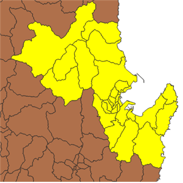
[그림 3.2-1] 시·도 단위의 평가 대상 지역 선택
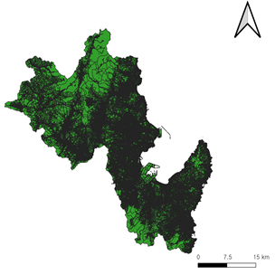
[그림 3.2-2] 시·도 단위의 평가 대상 지역의 지적도
그다음으로 시·도 단위의 평가 대상 지역 지적도에서 제외 대상 구역을 제거하는 작업이 필요하다. 이를 위해 면적이 10 ㏊ 이상인 공간시설과 부지를 포함한 하천 면적을 제거하고 제외 대상이 되는 지목을 제거하면, [그림 3.2-3]과 같이 시·도 단위의 대상공간이 산출되었음을 확인할 수 있다. 하지만 긴급대응난이도는 읍·면·동 단위로 평가되기 때문에 시·도 단위의 대상공간을 [그림 3.2-4]와 같이 읍·면·동 단위로 다시 산출하는 작업을 진행하여야 한다. 이 작업까지 완료되면 시·도 단위의 평가 지역 내에 있는 읍·면·동들의 대상공간 산출이 완료된다.
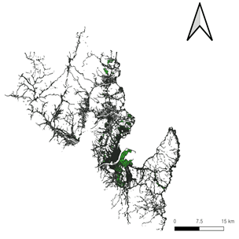
[그림 3.2-3] 시·도 단위 대상 공간 예시
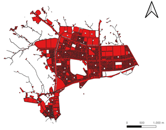
[그림 3.2-4] 읍·면·동 단위 대상 공간 예시
활동 공간
활동공간은 재해 시의 피난이나 소화·구조·지원 등의 긴급대응 활동이 이루어질 수 있는 영역으로 정의되며, 도로의 중심을 기준으로 하는 버퍼 범위로 설정된다. 이때, 버퍼 범위는 [표 3.3-1]에 나타난 바와 같이 도로 폭에 따른 도로 버퍼 반경 산출식으로 계산할 수 있고, 긴급 대응 활동이 가능한 장소는 버퍼 범위에서 건물을 제외한 영역을 말한다. 참고로 동경도에서는 소공원을 버퍼 면적에 산입하고, 대규모 교육 문화 시설 부지 면적과 공동주택 토지 면적을 고려하여 활동 공간을 산출하였지만, 일본과 한국의 행정구역 단위 면적 차이로 인하여 활동 공간 산출에 있어 그 기여도가 매우 낮아 이 고려 사항들을 제외하였다.
[표 3.3-1] 도로 버퍼 반경 설정
도로폭, D (m)
도로 버퍼 반경 (m)
4 m 미만
대상 외
4 m ~ 6 m
(D/2)+(10+(D-4)×5.0)
6 m ~ 12 m
(D/2)+(20+(D-6)×1.67)
12 m 이상
(D/2)+30
활동공간을 산출하기 위해서는 먼저 도로 폭에 따른 도로 버퍼 면적을 구해야 한다. 다만 일반적인 GIS프로그램 사용 시 도로를 따라 버퍼를 생성하면 [그림 3.3-1]과 같이 버퍼 간 중복되는 영역이 발생한다. 따라서, 디졸브와 같은 기능을 활용하여 [그림 3.3-2]와 같이 중복되는 영역을 제거하는 작업을 진행하여야 한다.
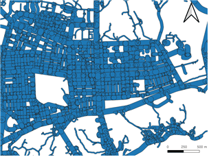
[그림 3.3-1] 버퍼 기능 실행 후 결과 예시
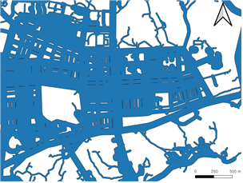
[그림 3.3-2] 디졸브 기능 실행 후 결과
도로 버퍼에서 중복되는 영역까지 제거되었다면 시·도 단위의 도로 버퍼 면적을 읍·면·동 단위로 잘라내어 [그림 3.3-3]과 같이 활동공간을 산출할 수 있다.
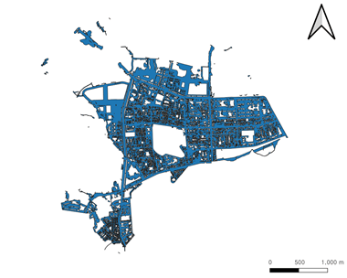
[그림 3.3-3] 활동공간 예시
지역내이동 난이도
개요
지역내이동 난이도()는 활동곤란계수의 도로 네트워크 밀도 부족률에 기반하여 정의된 지수로, 읍·면·동 단위의 행정구역 내의 재해 지점에서 폭이 넓은 도로까지 접근성을 평가한 지수다. 이 지수는 재해 시에 피난을 위해 폭이 넓은 도로로 향할 때 또는 소화 구조·지원 등의 활동을 위해서 폭이 넓은 도로에서 재해지로 향할 때 도달이 어느 정도로 어려운지를 의미하는 지표이며, 식 (4.1-1)로 표현된다.
(4.1-1)
여기서 는 지역내이동 난이도, 는 재해 발생 지점을 의미하는 시작지점에서 구호 거점을 의미하는 도착지점까지 도달 시간을 의미하고, 20은 재해 활동 시 이동에 있어 어느 정도 어려움이 있는지를 평가하기 위한 일종의 시간 기준에 해당한다. [그림 4.1-1]에서 파란색 점이 시작지점에 해당하며, 빨간색점은 도착지점에 해당한다. 이때 도달 시간은 시작 지점에서 가장 가까운 도착지점까지 거리를 기준으로 산출 되며, 활동공간 부족률 산출 시 제외 면적에 해당하는 구역에는 대피 및 구조에 대한 수요가 없을 것으로 상정하여 시작지점을 생성하지 않으며 [그림 4.1-1]의 점선이 이에 대한 예시이다.
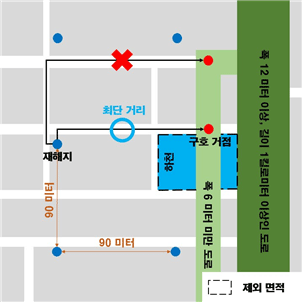
[그림 4.1-1] 지역내이동 난이도 예시
시작지점
시작지점은 지진 발생 시 대피가 시작되거나 대응 활동이 요구되는 지역 내 모든 지점, 즉 지역 내 재해지를 의미한다. 이러한 시작지점을 산정하기 위해 [그림 4.2-1]처럼 가로와 세로가 90 m인 정사각형의 격자에서 대상이 되는 행정구역을 덮는 그리드를 생성한다. 그 후 [그림 4.2-2]와 같이 그리드 내에 중심점을 생성한다.
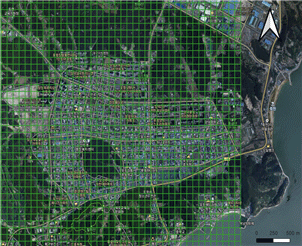
[그림 4.2-1] 대상 지역을 덮는 그리드 예시
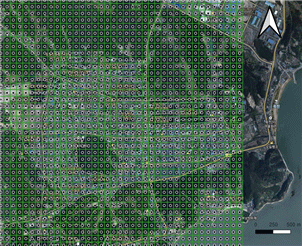
[그림 4.2-2] 그리드에 생성된 중심점 예시
이때 활동공간 부족률에서 제외 대상 공간에 해당하는 영역에 생성된 경우 해당 지점의 시작지점을 제거한다. 즉, 대상 공간에만 시작지점이 생성되도록 하는 것이며, 이것은 대상 공간에 피난 및 구조 대상자가 있다고 상정함을 의미한다. 이에 대한 예시는 [그림 4.2-3]과 같으며, 대다수의 시작 지점이 주거지와 같은 생활 공간에 생성되었음을 확인할 수 있다. 이 과정은 활동곤란계수의 도로 네트워크 밀도 부족률에서 시작지점을 생성하는 과정과 동일하다.
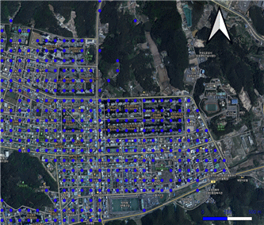
[그림 4.2-3] 시작지점 예시
도착지점
도착지점은 재해 발생 지점들 구조 활동을 전개하거나 해당 지점들에서 대피를 하기 위해 폭이 넓은 도로의 교차점에 설정되는 일종의 구호 거점을 말하며, 여기서 폭이 넓은 도로는 1 km 이상 연속하는 폭 12 m 이상의 도로를 의미한다. 조금 더 합리적인 평가를 위해 읍·면·동 경계에 위치하는 시작지점들은 해당 읍·면·동 내의 도로에 생성된 도착지점에 도달하는 거리보다 인접해 있는 읍·면·동의 도착지점으로 도달하는 거리가 짧아지는 경우가 있어 이를 고려해야한다. 이를 위해 [그림 4.3-1]과 같이 대상 읍·면·동내의 도로뿐만 아니라 [그림 4.3-2]와 같이 인접해 있는 읍·면·동의 도로를 포함하여 도착지점을 생성하여야 한다.
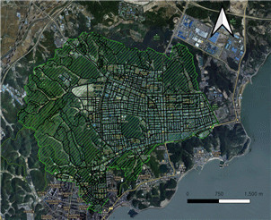
[그림 4.3-1] 대상 지역 도로망 예시
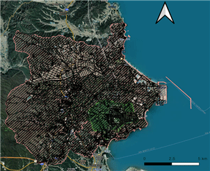
[그림 4.3-2] 대상 지역의 인접 지역을 포함한 도로망 예시
이렇게 생성된 도착지점은 [그림 4.3-3]과 같이 나타나게 되며, 이 과정 역시 도로 네트워크 밀도 부족률에서 도착지점을 생성하는 방법과 동일하다.
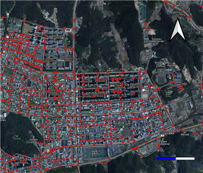
[그림 4.3-3] 도착지점 예시
도달시간
시작지점과 도착지점이 설정되고 나면 모든 시작지점을 대상으로 도착지점까지의 최단 경로를 구한 뒤, 이 경로의 길이를 4 ㎞/h로 나누어 시작지점에서 도착지점까지 이동 소요 시간을 산출한다. 이때 시작지점에서 도로를 진입할 때의 거리는 시작지점과 가장 가까운 도로에 수직거리이며, 이 수직선의 거리도 도착지점까지 최단 경로에 포함된다. 먼저 시작지점에서 도착지점까지 최단 경로 구하기 위해서는 최단 경로 알고리즘과 같은 네트워크 분석이 필요하다. 일례로, QGIS의 QNEAT3 플러그인의‘OD Matrix from Layers as Table (m:n)’기능을 사용하면 [그림 4.4-1]과 같이 모든 시작지점(Origin)과 모든 도착지점(Destination)까지의 최단 거리를 구할 수 있다. 여기서 ‘entry_cost’가 시작지점에서 도로까지 진입 거리이며, 이때 진입 거리는 시작지점에서 도로까지의 수직 거리로 산출된다. ‘network_cost’는 도로상 거리 그리고‘total_cost’는 이 둘을 합한 거리를 의미한다.
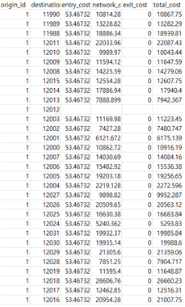
[그림 4.4-1] OD Matrix from Layers as Table (m:n) 결과 예시
OD Matrix from Layers as Table (m:n)’기능을 활용하게 된다면, 앞서 언급한대로 모든 시작지점과 모든 도착지점에 대한 최단 거리가 계산되기 때문에 시작지점 별로 가장 짧은 거리를 추출하여 [그림 4.4-2]와 같이 시작지점에서 가장 가까운 도착지점까지의 거리를 선별하여야 한다.
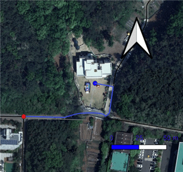
[그림 4.4-2] 시작지점에서 도착지점까지 최단 거리 예시
그 후에 산출된 거리를 4 ㎞/h로 나눈 뒤 시작지점 별로 이동 소요 시간을 모든 시작지점에 대해 구하면 도달 시간 계산이 완료된다. 주의할 점으로 사용하는 데이터에 [그림 4.4-3]과 같이 도로망 단절(언더슛)이 많을 경우 시작지점에서 도착지점까지 최단 거리가 산출되지 않는 경우가 발생한다.
이러한 경우는 예외적인 처리를 통해 최종 결과인 지역내이동 난이도 값에 언더슛으로 인한 영향을 최소화하는 방법이 필요하다. 이를 해결하기 위한 여러 방법 중 단절된 도로망을 제거하거나 연결하는 작업을 하여 최단 거리를 산출하는 방법이 있다. 하지만 단절되어있는 도로를 하나씩 찾아서 수작업으로 진행하기에 어려움이 있으므로, 언더슛으로 인해 최단 거리가 산출되지 않는 시작지점에 대해서는 도로상의 경로를 고려하지 않고 가장 가까운 도착지점까지의 직선거리로 최단 거리를 산출하는 방법이 언더슛으로 인한 영향을 최소화한다고 볼 수 있다.
지역간이동 난이도
개요
긴급대응난이도의 기반이 되는 활동곤란계수는 활동 유효 공간 부족률과 도로 네트워크 밀도 부족률 두 가지 지표를 사용하여 지역 내 위험도만 평가하고, 지역 간 연결성을 고려한 위험도는 평가되지 않았다. 하지만 지진 발생 후 긴급 대응 활동은 해당 지역 내뿐만 아니라 지역 간에도 이행되기 때문에, 지역 간 연결성을 고려해 지진재해 위험도를 평가할 필요가 있다. 이러한 관점에서 지역간이동 난이도(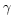)는 네트워크 연결성을 나타내는 지표 중 하나인 매개중심성을 이용하여 넓은 범위의 도로망을 이용하여 지역 간 이동에 대한 난이도를 나타내며, 정점은 도로의 교차점을 나타내고 간선은 도로를 나타낸다. 다만, 매개중심성 값이 크다는 건 해당 노드가 상대적으로 중요하다는 의미를 갖는다고 간주하여, 식 (5.1.2)과 같이 중요하지 않음, 즉 난이도를 나타내게끔 바꿔주어야 한다.
(5.1-1)
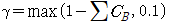
(5.1-2)
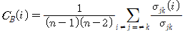
식 (5.1.1)에서 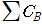는 산출 대상 지역 내 매개중심성 값의 합을 의미한다. 또한, 식 (5.1.2)에서 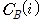는 노드 의 매개중심성, 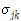는 노드 에서 로 가는 최단 경로의 총개수, 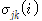는 노드 에서 로 가는 최단 경로 중 노드 를 지나는 경로의 개수, 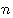은 도로 네트워크 노드의 총개수를 의미한다. 지역간이동 난이도는 큰 매개중심성 값을 많이 가질수록 여러 지역을 연결하는 중요 노드들이 지역 내에 있다고 보아 대응 활동이 비교적 더 수월함을 의미하며, 이는 [그림 5.1-1]에서 파란색 노드가 점선이 의미하는 행정 경계 내에 많을수록 더 안전함을 의미한다. 반대로, 빨간색 노드와 같이 낮은 매개중심성을 행정 경계 내 많이 있으면 지역을 연결하는 중요 노드들이 지역 내 없거나 매우 적다고 보아, 더 위험한 지역임을 의미한다.
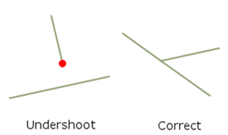
[그림 5.1-1] 지역간이동 난이도 예시
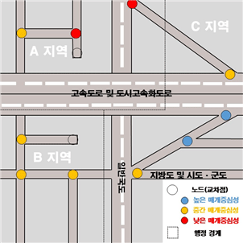
[그림 4.4-3] 언더슛 예시
매개중심성
매개중심성은 네트워크 분석에서 중요한 지표로, 네트워크 내의 모든 노드 쌍 간의 최단 경로 중 특정 노드가 포함된 경로의 비율을 측정하며, 한 노드가 네트워크에서 정보를 중개하거나 전달하는 데 얼마나 중요한 역할을 하는지를 나타낸다. 매개중심성이 높은 노드는 다른 노드 간의 연결을 중재하는 허브 역할을 하며, 네트워크의 구조적 중심에 위치할 가능성이 높다([그림 5.2-1]의 6번과 같은 노드). 반대로, 그래프의 끝 노드([그림 5.2-1]의 1~3번과 같은 노드)는 다른 노드 간의 경로에서 중재 역할을 하지 않으므로 매개중심성이 0으로 계산된다. 연결된 그래프에서 모든 노드 쌍 사이에는 최소 하나의 최단 경로가 존재하고, 여기서 최단 경로는 두 노드 사이를 연결하는 경로 중에서 가장 적은 수의 간선을 통과함을 의미한다. 따라서 매개중심성은 이러한 최단 경로들이 특정 노드를 통과하는 빈도를 계산하여 산출된다.
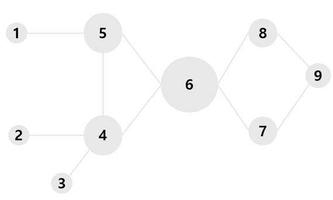
[그림 5.2-1] 매개중심성을 표현한 네트워크
도로 네트워크
매개중심성을 적용하여 지역간이동 난이도를 산출하려면, 도로 네트워크의 범위를 설정할 필요가 있다. 또한, 지역내이동 난이도와 달리 지역간이동 난이도는 도로망 데이터의 무결성이 매우 중요하여, 지역내이동 난이도 산출 시 사용되는 도로망에서 발생할 수 있는 언더슛과 같은 문제가 있어 서는 안되며, ‘지역간’이라는 명칭에 맞게 범위가 더 넓고 레벨이 높은 도로망을 설정할 필요가 있다. 이러한 조건을 갖춘 도로망 중 가장 유용한 것은 한국교통연구원에서 공개 중인 도로망 GIS DB이며, 해당 도로망은 도로 단절과 같은 문제가 현저히 적고, 도로 레벨도 구분되어 있어 매개중심성 분석에 매우 적합하다고 볼 수 있다. 다만, 해당 도로망은 [그림 5.3-1]과 같이 노드의 속성이 여러개로 정의되지만, 지역간이동 난이도는 물리적 의미가 강한 교차점만을 노드로 보기 때문에 속성변화점이나 유턴노드와 같은 노드는 제외하고 매개중심성 분석을 진행해야 한다.
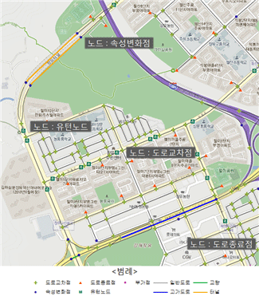
[그림 5.3-1] 교통망 GIS DB에서의 노드 유형
도로망의 범위는 지역내이동 난이도보다 더 넓은 범위여야 하기 때문에, 긴급대응난이도를 평가하고자 하는 시·도보다 한 단계 위의 범위로 설정한다. 예를 들어, [그림 5.3-2]에서 초록색 부분에 해당하는 경상북도 포항시의 읍·면·동을 평가하고자 한다면 매개중심성 분석의 대상이 되는 도로망의 범위는 검정색 선이며 경상북도와 그와 인접해 있는 대구광역시로 정한다.
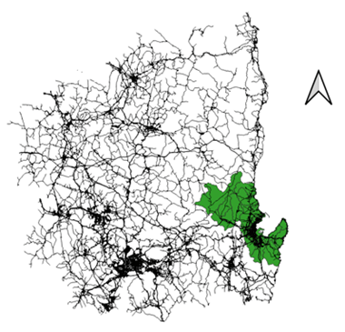
[그림 5.3-2] 포항시의 행정구역과 경상북도 및 대구광역시 범위의 도로망
그리고 도로망 레벨의 경우 한국교통연구원에서는 [그림 5.3-3]과 [그림 5.3-4]와 같이 레벨 5와 6 두 가지로 구분하고 있으며, 레벨 6이 비교적 도로망이 더 많이 표출되는 것을 확인할 수 있다. 레벨 5의 경우 고속도로, 도시고속도로, 일반국도, 국지도/지방도, 왕복 4차선 이상의 특별광역시도/구도/시군도, 도로의 연결성 및 방향성을 위해 필요한 왕복 2차선 도로로 구성되며, 레벨 6의 경우 고속도로, 도시고속도로, 일반국도, 국지도/지방도, 왕복 2차선 이상의 특별광역시도/구도/시군도, 도로의 연결성 및 방향성을 위해 필요한 왕복 1차선 도로로 구성된다.
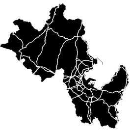
[그림 5.3-3] 도로망 GIS DB 레벨 5 예시
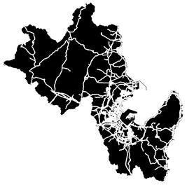
[그림 5.3-4] 도로망 GIS DB 레벨 6 예시
레벨5 도로망의 경우 도로의 수가 레벨6에 비해 더 적기 때문에 읍·면·동 단위에서 교차점이 존재하지 않아 매개중심성 값이 산출되지 않는 문제가 발생할 수 있다. 따라서 레벨6은 지역 내 세부적인 소도로 등은 적절히 반영하면서도, 주요 도로들 위주로 도로망이 구성되어있는 최적의 도로망으로 판단하여 해당 레벨의 도로망을 분석 대상 도로망으로 선정한다.
도로망의 매개중심성
도로망 범위와 레벨 산정이 완료되었다면 [그림 5.4-1]과 같이 산정된 전체 도로망의 노드(교차점)들에 대해 매개중심성 분석을 진행하여 매개중심성 값을 먼저 구한다.
[그림5.4-1] 도로망 전체에 대한 노드 예시
그 후 앞서 사용했던 읍·면·동 단위의 행정구역과 겹치는 노드들을 먼저 추출하고, 이 노드들의 매개중심성 값은 클수록 지역 간 연결성이 더 높아 대응 활동이 비교적 더 수월함을 의미하기 때문에 이를 위험도 관점으로 바꾸기 위해 식 (5.1.1)과 같은 연산을 진행한다. 해당 연산을 진행한 후 [그림 5.4-2]처럼 읍·면·동 단위별로 노드를 노란색 영역과 같이 필터링하는 작업을 진행한 뒤 해당 노드들의 매개중심성 값에 대해 식 (5.1.1)을 이용하여 해당 읍·면·동의 지역간이동 난이도를 산출한다.
 는 도로 네트워크 밀도 부족률이다. 즉, 활동곤란계수는 활동 유효 공간 부족률과 도로 네트워크 밀도 부족률의 기하평균으로 계산되며, 이는 0부터 1까지 범위로 산출되는 활동 유효 공간 부족률과 0과 임의의 양의 값을 범위로 갖는 도로 네트워크 밀도 부족률의 특성으로부터 기인한다. 즉, , , 그리고
는 도로 네트워크 밀도 부족률이다. 즉, 활동곤란계수는 활동 유효 공간 부족률과 도로 네트워크 밀도 부족률의 기하평균으로 계산되며, 이는 0부터 1까지 범위로 산출되는 활동 유효 공간 부족률과 0과 임의의 양의 값을 범위로 갖는 도로 네트워크 밀도 부족률의 특성으로부터 기인한다. 즉, , , 그리고 

 의 매개중심성, 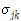는 노드
의 매개중심성, 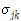는 노드  에서
에서  로 가는 최단 경로의 총개수, 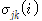는 노드
로 가는 최단 경로의 총개수, 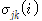는 노드